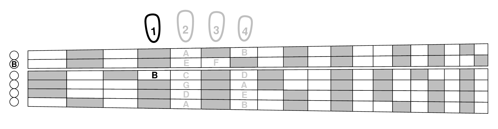

None of the exercises in this book requires changing position along the neck during a song. But most of these exercises can and should be played in more than one position. And all the exercises in the first chapter should be played in two positions, first and seventh. So how do you find seventh position without looking at the fretboard marks or counting frets?
There is an easy trick for finding positions without looking, so you should learn it right at the outset as you start to learn position seven. The same kind of trick even works for other positions.
Seventh position, by definition, is where your hand is located when your first finger is comfortable playing notes on the seventh fret. If your hand is in the right place, then most of the notes played with the first finger are exactly an octave above the next lower open string, as shown below:
So the Easy way to verify that you are in seventh position is to play that E on the fifth string with your first finger, then compare that sound with the low E on the open sixth string. If you're in the right place, the octave will be in tune. If it's not, move higher or lower to make it in tune.
Just remember (as part of your fretboard learning) that “first finger E in seventh position” should match octaves with an open E string. Of course this trick wouldn't be used when changing to seventh position in the middle of a piece, but it's perfect for switching between first and seventh positions when replaying the exercises in the first chapter (Group A). And it can also be used at the beginning of a piece in a public performance; people will assume you're just checking your tuning (they're used to hearing E's in that context).
Same trick but on the second string: “first finger E in fifth position.”
Same trick but on the third string: “first finger E in ninth position.”
Same trick but on the fourth string: “first finger E in second position.”
First position is a little different. Because the first finger is right next to the nut, all of the first finger notes are just half step away from an open string so they don't match any open strings. Of course you don't need the tuning trick to verify first position since your first finger can simply reach out and touch the nut.
But the tuning trick still works with E's if you just use your second finger to verify the position: “second finger E in first position.”
Like first position, you can still use E's to locate all the other positions, but not using your first finger. It happens that sixth, eleventh and thirteenth positions all have a second finger E, but you won't be using those positions much in this book based on the key of C.
The diagram below shows all possible open string matches in case you're curious about other possibilities besides E's.
When you think of third position, the note G should immediately come to mind, and it's on the first finger, so use G on either the first or sixth string to locate third position: “first finger G in third position.”
Likewise, when thinking of fourth position, the poor lonely B on the third string should come to mind, so use it to locate fourth position (it will feel better to be used and will appreciate being remembered): “first finger B in fourth position.”
